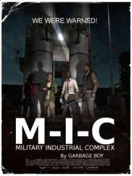

<?xml version="1.0" encoding="UTF-8"?>
<rss version="2.0"
	xmlns:content="http://purl.org/rss/1.0/modules/content/"
	xmlns:wfw="http://wellformedweb.org/CommentAPI/"
	xmlns:dc="http://purl.org/dc/elements/1.1/"
	xmlns:atom="http://www.w3.org/2005/Atom"
	xmlns:sy="http://purl.org/rss/1.0/modules/syndication/"
	xmlns:slash="http://purl.org/rss/1.0/modules/slash/"
	>

<channel>
	<title>Chronosynclastic Infundibulum &#187; politics</title>
	<atom:link href="http://www.semanticoverload.com/category/politics/feed/" rel="self" type="application/rss+xml" />
	<link>http://www.semanticoverload.com</link>
	<description>The world through my prisms</description>
	<lastBuildDate>Thu, 07 Apr 2011 17:36:17 +0000</lastBuildDate>
	<language>en-US</language>
	<sy:updatePeriod>hourly</sy:updatePeriod>
	<sy:updateFrequency>1</sy:updateFrequency>
	<generator>http://wordpress.org/?v=3.5</generator>
		<item>
		<title>Jan Lokpal Bill: More than what meets the eye</title>
		<link>http://www.semanticoverload.com/2011/04/07/jan-lokpal-bill-more-than-what-meets-the-eye/</link>
		<comments>http://www.semanticoverload.com/2011/04/07/jan-lokpal-bill-more-than-what-meets-the-eye/#comments</comments>
		<pubDate>Thu, 07 Apr 2011 05:08:09 +0000</pubDate>
		<dc:creator>Semantic Overload</dc:creator>
				<category><![CDATA[debate]]></category>
		<category><![CDATA[discussion]]></category>
		<category><![CDATA[india]]></category>
		<category><![CDATA[philosophy]]></category>
		<category><![CDATA[politics]]></category>
		<category><![CDATA[anna hazare]]></category>
		<category><![CDATA[corruption]]></category>
		<category><![CDATA[fast]]></category>
		<category><![CDATA[jan lokpal]]></category>
		<category><![CDATA[lokpal]]></category>
		<category><![CDATA[protest]]></category>

		<guid isPermaLink="false">http://www.semanticoverload.com/?p=836</guid>
		<description><![CDATA[Anna Hazare&#8217;s fast unto death has entered its third day, and I am still conflicted about whether the Jan Lokpal Bill (in support of which Hazare has launched his fast) will actually address the problem of rampant corruption in India. To be clear, the Lokpal Bill (Ombudsman Bill) proposed by the lawmakers in India as [...]]]></description>
				<content:encoded><![CDATA[<p>Anna Hazare&#8217;s fast unto death has <a href="http://ibnlive.in.com/news/govt-in-dilemma-as-annas-fast-enters-third-day/148481-3.html">entered its third day</a>, and I am still conflicted about whether the <a title="Wikipedia article on Jan Lokpal bill" href="http://http://en.wikipedia.org/wiki/Jan_Lokpal_Bill">Jan Lokpal Bill</a> (in support of which Hazare has launched his fast) will actually address the problem of rampant corruption in India.</p>
<div class="wp-caption alignright" style="width: 560px"><p class="wp-caption-text">Image source: indiatogether.org</p></div>
<p>To be clear, the <a title="Government's lokpal bill" href="http://indiaagainstcorruption.org/docs/Govt._s_Lokpal_Bill_2010.zip">Lokpal Bill (Ombudsman Bill) proposed by the lawmakers</a> in India as a mechanism to fight corruption is a sham and is designed to encourage, rather than discourage corruption. In the lawmaker&#8217;s version of the Lokpal bill, the office of the ombudsperson is appointed by the government (at its own pleasure) and the office will serve only in an advisory capacity with no powers to actually pursue corruption charges in court. Furthermore, the jurisdiction of the office will be limited to politicians and not the civil servant and other officers who are responsible for running the government machinery; of course, the office will not have the authority to investigate the Prime Minister. Also, while the office of the ombudsperson do not have the authority to actually press charges against the politicians they deem corrupt, they do have the authority to penalize the citizens who make the corruption accusation (in the event that the office finds their target of investigation innocent). [source: <a href="http://indiaagainstcorruption.org/">India Against Corruption</a>]</p>
<p>It doesn&#8217;t take a genius to figure out that this bill is a toothless tiger which will only foster the moral bankruptcy and the rampant corruption that is the Indian government.</p>
<p>Now, we come to the Jan Lokpal bill that is being proposed by the <a href="http://indiaagainstcorruption.org/">India Against Corruption</a> lobby. The Jan Lokpal bill proposes that the office of the ombudsperson be an independent institution much like the supreme court or the election commission. It is to be appointed by a selection committee consisting of judges, &#8216;meritorious&#8217; citizens who have won awards like the Nobel prize, Magsasay award, the Election Commission, Auditor General, and others. The bill proposes that central vigilance commission (which investigates corruption by the civil servants and government offices and departments) and the division of the Central Bureau of Investigation be folded into the office of the ombudsperson, so that there is a single office that investigates the charges of corruption in all branches and levels of the government. The bill also proposes that the office be an investigatory body with authority for law enforcement which allows the office to pursue criminal charges against the individuals who the office finds guilty. The bill also sets a time limit of one year to complete the investigation and one year for filing charges against the accused if sufficient evidence is available. The bill also have provisions for whistle blower protection, and a provision to recover the money or value lost by the government from the individual who was found guilty of corruption (which resulted in the aforementioned loss). [source: <a href="http://indiaagainstcorruption.org/">India Against Corruption</a>]</p>
<p>On the face of it, the Jan Lokpal bill looks like a great idea, but reflecting on it, I am disturbed by the assumptions made in the bill. My objections are a little different from the kind I have seen online. For example, here are objections by [<a title="Objections to Jan Lokpal Bill by Rohan" href="http://hopelesslyflawed.wordpress.com/2011/04/07/the-lokpal-bill/">Rohan</a>], [<a href="http://blog.offstumped.in/2011/04/05/anna-hazares-misguided-fast/">Offstumped</a>], and [<a href="http://www.business-standard.com/india/news/the-hazare-hazard-/431045/">Business Standard</a>]. I have both practical and philosophical objections. I present one of each.</p>
<p>On a practical level, the bill says little to address the issue of &#8220;who watches the watchman&#8221;. How do you ensure that the integrity of the ombudsperson&#8217;s office is not compromised, and if it is compromised, then how do you recognize and then fix it? Given the level of corruption in India, this is a real concern. Until this issue is addressed sufficiently, I am not too comfortable throwing my support behind it.</p>
<p>On a philosophical level, I have deeper concerns. The office proposed by the Jan Lokpal bill is a meritocratic institution which monitors a the government, a democratic institution. To put it differently, the bill makes a democratic institution accountable not to the people who voted, but to a meritocratic institution which can potentially exert it&#8217;s influence on the outcomes of the governance. The risk here is that such a meritocratic institution could develop the attitude of &#8220;people don&#8217;t know what they want, but we know what&#8217;s good for the people&#8221;, and use it&#8217;s authority to enforce an agenda that might not be the will of the people.</p>
<p>While I grant you that the current &#8220;democracy&#8221; in the India is really plutocracy in disguise, simply making it answerable to a meritocracy cannot be a solution to the problem at hand.</p>
<p>IMHO, the solution to this problem of corruption can only come from democracy itself. Not because democracy is somehow sacred, but because the institution that is corrupt is supposed to be democratic in the first place. Initiatives like &#8220;<a href="http://www.ipaidabribe.com/">I Paid A Bribe</a>&#8221; is a great example of such efforts. Another example of involving the citizenry was proposed by India&#8217;s chief economic advisor Kaushik Babu in which he proposed<a href="http://blogs.wsj.com/indiarealtime/2011/03/30/kaushik-basu-says-make-bribe-giving-legal/"> decriminalizing bribe giving</a> and keep bribe-taking a crime. This will provide an incentive for the bribe giver to not conceal the fact that the bribe was given and even co-operate to ensure that the bribe taker is caught.<br />
I wish I had something more constructive to offer, but unfortunately I don&#8217;t.</p>
<p>UPDATE: <a href="http://realitycheck.wordpress.com/2011/04/06/jan-lok-pal-caveat-emptor/">Realitycheck provides credible objections</a> to the Jan Lokpal bill..</p>
]]></content:encoded>
			<wfw:commentRss>http://www.semanticoverload.com/2011/04/07/jan-lokpal-bill-more-than-what-meets-the-eye/feed/</wfw:commentRss>
		<slash:comments>1</slash:comments>
		</item>
		<item>
		<title>More on Afridi</title>
		<link>http://www.semanticoverload.com/2011/04/05/more-on-afridi/</link>
		<comments>http://www.semanticoverload.com/2011/04/05/more-on-afridi/#comments</comments>
		<pubDate>Wed, 06 Apr 2011 03:13:41 +0000</pubDate>
		<dc:creator>Semantic Overload</dc:creator>
				<category><![CDATA[debate]]></category>
		<category><![CDATA[politics]]></category>
		<category><![CDATA[sports]]></category>
		<category><![CDATA[26/11]]></category>
		<category><![CDATA[Afridi]]></category>
		<category><![CDATA[controversy]]></category>
		<category><![CDATA[cricket]]></category>
		<category><![CDATA[gambhir]]></category>
		<category><![CDATA[gautam]]></category>
		<category><![CDATA[india]]></category>
		<category><![CDATA[pakistan]]></category>
		<category><![CDATA[terrorism]]></category>

		<guid isPermaLink="false">http://www.semanticoverload.com/?p=826</guid>
		<description><![CDATA[Looks like Afridi&#8217;s comments (similar to the ones I talked about in my previous post) are raising quite a storm in India and elsewhere, especially in the online community. He said something to the effect that Indians do not have as large a heart as Pakistanis and Muslims do. Since the proverbial fit hit the [...]]]></description>
				<content:encoded><![CDATA[<p>Looks like Afridi&#8217;s comments (similar to the ones I talked about in<a title="Afridi’s Turncoat Act" href="../../../2011/04/04/afridis-turncoat-act/index.html"> my previous post</a>) are raising quite a storm in India and elsewhere, especially in the online community. He said something to the effect that Indians do not have as large a heart as Pakistanis and Muslims do. Since the proverbial <a title="TOI article: Muslim scholar slams Afridi's line" href="http://timesofindia.indiatimes.com/city/mumbai/Muslim-scholars-slam-Afridis-line/articleshow/7879040.cms">fit hit the shan</a>, Afridi has gone into damage control mode claiming that<a title="Video: NDTV interview with Afridi" href="http://profit.ndtv.com/video/show/195596"> he was quoted out of context</a>.</p>
<div id="attachment_829" class="wp-caption alignright" style="width: 209px"><a href="../../../wp-content/uploads/2011/04/5285420332_4fc0a23931.jpg"></a><p class="wp-caption-text">Afridi. Image source: http://www.flickr.com/photos/charaka/</p></div>
<p>The fury that came out of the Indian online community either in support of or against Afridi had the usual <a title="Aman Ki Asha" href="http://www.amankiasha.com/">Aman-ki-Asha</a> defense or <a title="Wikipedia article on State Sponsored Terrorism and Pakistan" href="http://en.wikipedia.org/wiki/State-sponsored_terrorism#Pakistan">Pakistan-is-a-terror-supporter</a> attack. I will not comment on either side of the arguments except that I saw many good arguments on both sides. However, I do wish to make a point about &#8220;Pakistan is a terrorist state&#8221; versus &#8220;Pakistanis are terrorist sympathizers&#8221; argument that seems to have conveniently folded itself into the argument associated with Afridi&#8217;s statements.</p>
<p>On one side, while many agree that the political establishment in Pakistan sympathizes with and actively supports terrorist acts against India, they caution that one should not claim that the state&#8217;s support for terrorism is the same as the people&#8217;s support for terrorism much like Muage vs. Zimbabweans. On the other side, there are many who argue that a state establishment cannot function without an approval from the masses (even a tacit approval through silence is sufficient). In the latter camp, <a title="Greatbong's blogpost about Afridi's comments" href="http://greatbong.net/2011/04/05/the-big-hearts/">Greatbong argues</a> that <a title="Salmaan Taseer assassaination" href="http://en.wikipedia.org/wiki/Salmaan_Taseer#Assassin">assassination of moderates like Taseer</a> points to a popular sympathy (albeit a tacit one) for Islamic fundamentalism.</p>
<p>I agree with the sentiment that one should not equate the actions of the political establishment with the people of the state. This statement is easy to defend when talking about the people of the state, but the same arguments do not hold when you are considering individuals. The difference is the similar to how statistical inferences, while applicable to a large dataset, become irrelevant when considering the outcome of a single event. Let me explain. While the American public may not favor massive human rights violations in Iraq and may even be against the war in Iraq, you cannot claim the same to be true of some American individual. I know many Americans who actively support America&#8217;s invasion of Iraq and deposing of Saddam Hussain. I also know many Americans who oppose it.</p>
<p>The American I know who oppose the Iraq war are quick to blame their political establishment and, if pressed, are willing to offer their apologies to Iraqies and an outright admission that they oppose their goverment&#8217;s actions.</p>
<p>Let&#8217;s go back and consider Afridi&#8217;s comments specifically with respect to this argument &#8221;Pakistan is a terrorist state&#8221; versus &#8220;Pakistanis are terrorist sympathizers&#8221;. Reacting to Gautam Gambhir&#8217;s statement that India&#8217;s victory over Pakistan will help soothe the pain over 26/11 Mumbai attacks, Afridi said: &#8220;I think they were very stupid comments by Gautam Gambhir. I was not expecting this from Gautam. This is all politics, what do you know about who carried out the Mumbai attacks?&#8221; [<a href="http://www.indiatoday.intoday.in/site/Story/134319/sports/world-cup-afridi-slams-gambhir-for-2611-remark.html">source</a>]</p>
<p>Despite <a title="ISI's role in 26/11 attacks" href="http://www.lankaenews.com/English/news.php?id=10836">overwhelming</a> <a title="Headly reveals Pak role in 26/11 Mumbai attacks" href="http://ibnlive.in.com/news/david-headley-reveals-paks-role-in-2611-attacks/133350-3.html?from=tn">evidence</a> that <a title="Wikipedia article on attribution of the 26/11 Mumbai attacks" href="http://en.wikipedia.org/wiki/Attribution_of_the_2008_Mumbai_attacks">26/11 attacks received support from Pakistani establishment</a>, Afridi asserts that there is no knowledge of the perpetrators of 26/11. He could have distanced himself from the whole thing by simply saying &#8220;This is just politics.&#8221; and stopping there. But he did not. For some reason he felt compelled to defend the Pakistani establishment. That sounds like Afridi is batting for the Pakistani establishment. So I cannot give Afridi a reprieve on the &#8221;Pakistan is a terrorist state&#8221; versus &#8220;Pakistanis are terrorist sympathizers&#8221; schism.</p>
]]></content:encoded>
			<wfw:commentRss>http://www.semanticoverload.com/2011/04/05/more-on-afridi/feed/</wfw:commentRss>
		<slash:comments>3</slash:comments>
		</item>
		<item>
		<title>Opiate of the Intelligentsia</title>
		<link>http://www.semanticoverload.com/2011/03/31/opiate-of-the-intelligentsia/</link>
		<comments>http://www.semanticoverload.com/2011/03/31/opiate-of-the-intelligentsia/#comments</comments>
		<pubDate>Fri, 01 Apr 2011 01:04:45 +0000</pubDate>
		<dc:creator>Semantic Overload</dc:creator>
				<category><![CDATA[advocacy]]></category>
		<category><![CDATA[debate]]></category>
		<category><![CDATA[discussion]]></category>
		<category><![CDATA[politics]]></category>
		<category><![CDATA[rant]]></category>
		<category><![CDATA[US]]></category>
		<category><![CDATA[bill o'reilly]]></category>
		<category><![CDATA[daily show]]></category>
		<category><![CDATA[Glenn Beck]]></category>
		<category><![CDATA[jon stewart]]></category>
		<category><![CDATA[kill bill]]></category>
		<category><![CDATA[stephen colbert]]></category>

		<guid isPermaLink="false">http://www.semanticoverload.com/?p=812</guid>
		<description><![CDATA[This post is a coalescence of a discussion I had with my friend Nick over Facebook status updates. I thought it worthwhile to share the outcome of the discussion. Recently, Jon Stewart did his piece &#8220;I give up&#8221; on the fact that while the conservative political machine has been painting the public workers (like teachers [...]]]></description>
				<content:encoded><![CDATA[<p>This post is a coalescence of a discussion I had with my friend<a href="http://usclancaster.sc.edu/faculty/lawrence/"> Nick</a> over Facebook status updates. I thought it worthwhile to share the outcome of the discussion.</p>
<p>Recently, Jon Stewart did his piece <a title="The Daily Show segment &quot;I give up&quot; that aired on March 28th 2011" href="http://www.thedailyshow.com/watch/mon-march-28-2011/i-give-up---pay-anything---">&#8220;I give up&#8221;</a> on the fact that while the conservative political machine has been painting the public workers (like teachers and firemen) as the greedy ones who are bleeding the nation dry, in reality it is corporations like GE who are the problem because despite a $9B profit, <a title="News article that says GE paid no income taxes for 2010 despite making over $9B in profits" href="http://abcnews.go.com/Politics/general-electric-paid-federal-taxes-2010/story?id=13224558">GE paid $0 federal income tax</a> and got a $3.2B tax benefit. Now, it is considered common or &#8216;folk&#8217; knowledge that corporations exploit all kinds of tax loopholes and lobby heavily to ensure that tax laws leave open several such loopholes to be exploited by these corporations. So why are Stewart and other so-called pundits (including news organizations) &#8216;noticing&#8217; this only now and then pretending to be salient critics of such incongruities while at the same time depending on, and profiting from, the very same incongruities.  This is a real conflict of interest! One that hasn&#8217;t been adequately explained. My discussion on Facebook yielded the following.</p>
<p>Acting as an apologist for Stewart and co, it may be argued that while they do not contribute anything for affecting a change or reform, at least they enlighten us on how we are being screwed over. Many times we already know of it, and at other times it is news. But through it all, at least we are laughing. Then again, isn&#8217;t it a little bit like <a title="IMDB page for Elle Driver" href="http://www.imdb.com/character/ch0001804/bio">Elle Driver</a> reading to <a title="Blurb on the character Budd Sidewinder on wikipedia" href="http://en.wikipedia.org/wiki/List_of_Kill_Bill_characters#Budd_.2F_Sidewinder">Budd &#8220;Sidewinder&#8221;</a> about the effects of the venom of a Black Mamba, in <a title="IMDB page for Kill Bill Vol. 2" href="http://www.imdb.com/title/tt0378194/">Kill Bill Vol. 2</a>, after the Black Mamba has bitten him?</p>
<p>Consider the following hypothesis: This country has been and continues to be run by corporations. The political parties and the politicians are simply the means by which the corporations accomplish this task. There is little by means of democracy or &#8220;the system&#8221; that can be done to change this fact. So the only way out is perhaps a revolution. And the existing power brokers want to ensure that it never happens. They do this by drugging the entire population, intellectually speaking, of course.</p>
<p>The population in question can be broadly classified as the &#8220;vulgar&#8221; (and by vulgar I mean <a title="Dictionary entry for 'vulgar'" href="http://dictionary.reference.com/browse/vulgar">&#8220;Of or associated with the great masses of people&#8221;</a>) or the &#8220;<a title="Dictionary entry for 'intelligentsia'" href="http://dictionary.reference.com/browse/intelligentsia">intelligentsia</a>&#8220;. The vulgar have the numbers and the ability to affect such a revolution, but they lack the knowledge and understanding to accomplish this; the intelligentsia, on the other hand, have the knowledge and the intellect to use the abilities of the vulgar to affect the revolution. So together, the population can make the change. But they will not, by design. And here&#8217;s why.</p>
<p>Glenn Beck, Bill O&#8217;Reilly, and others serve as the &#8221;opiate of the vulgar&#8221; in ensuring that the masses focus their frustrations, anger, and action against all the wrong issues and attribute the problems to all the wrong reasons. Simultaneously, Stewart, Colbert, and others serve as the &#8220;opiate of the intelligentsia&#8221; by convincing their audience to simply resign to the status quo and not advocate for any change. Between the two, the existing power structures ensure perpetuation.</p>
]]></content:encoded>
			<wfw:commentRss>http://www.semanticoverload.com/2011/03/31/opiate-of-the-intelligentsia/feed/</wfw:commentRss>
		<slash:comments>0</slash:comments>
		</item>
		<item>
		<title>The emperor is naked and even he concedes it</title>
		<link>http://www.semanticoverload.com/2011/03/20/the-emperor-is-naked-and-even-he-concedes-it/</link>
		<comments>http://www.semanticoverload.com/2011/03/20/the-emperor-is-naked-and-even-he-concedes-it/#comments</comments>
		<pubDate>Sun, 20 Mar 2011 21:19:47 +0000</pubDate>
		<dc:creator>Semantic Overload</dc:creator>
				<category><![CDATA[politics]]></category>
		<category><![CDATA[rant]]></category>
		<category><![CDATA[US]]></category>
		<category><![CDATA[Bahrain]]></category>
		<category><![CDATA[Darfur]]></category>
		<category><![CDATA[Libya]]></category>
		<category><![CDATA[Mullen]]></category>
		<category><![CDATA[Sudan]]></category>
		<category><![CDATA[war]]></category>
		<category><![CDATA[yemen]]></category>

		<guid isPermaLink="false">http://www.semanticoverload.com/?p=796</guid>
		<description><![CDATA[The US has started its military offensive against Libya. Incidentally, the latter is an oil rich country ruled by a dictator who is not America&#8217;s puppet. Sound familiar? Hint: 1991 and 2003. In fact, the whole offensive has bipartisan support. So it&#8217;s fair to say that there are very few within the government (including the [...]]]></description>
				<content:encoded><![CDATA[<p>The US has started its <a href="http://news.yahoo.com/s/ap/lt_libya_obama">military offensive against Libya</a>. Incidentally, the latter is an oil rich country ruled by a dictator who is not America&#8217;s puppet. Sound familiar? Hint: <a href="http://en.wikipedia.org/wiki/Gulf_War">1991</a> and <a href="http://en.wikipedia.org/wiki/Iraq_War">2003</a>.</p>
<p>In fact, the whole offensive has <a href="http://www.dailypolitical.com/politics/republicans-say-president-waited-too-long-taking-action-against-libya.htm">bipartisan support</a>. So it&#8217;s fair to say that there are very few within the government (including the opposition party of &#8216;no&#8217;) who do not support the action. The major reason for this offensive is that Gaddafi did not heed to the demands of the international community which were [<a href="http://www.npr.org/2011/03/19/134682336/U-S-Allies-Discuss-Military-Action-Against-Libya">source</a>]:</p>
<blockquote><p>Gadhafi must stop his troops from advancing on Benghazi, pull them back from Ajdabiya, Misurata, and Zawiyah, and establish water, electricity and gas supplies to all areas. Humanitarian assistance must be allowed to reach the people of Libya. Let me be clear, these terms are not negotiable.</p></blockquote>
<p>The fear is that if the unrest in Libya is left unchecked, then the entire nation will descend into a civil war and there will be human-rights violation which is something the US is <a href="http://www.huffingtonpost.com/2011/03/19/human-rights-activists-protest-abuse-bradley-manning_n_838006.html">very</a> <a href="http://www.hrw.org/en/category/topic/counterterrorism/guantanamo">protective</a> of. Interestingly, doesn&#8217;t that argument make a stronger case for intervention in <a href="http://en.wikipedia.org/wiki/War_in_Darfur">Darfur, Sudan</a>? Of course it does! Then I wonder why the US refuses to intervene in what is arguably the worst abuses of human rights since <a href="http://en.wikipedia.org/wiki/Pol_Pot">Pol Pot&#8217;s regime</a>.</p>
<p>We all know what&#8217;s going on. Libya has oil and Gaddafi is not a US puppet. Currently Gaddafi is struggling to maintain complete control over Libya. So US has both the motive and the opportunity to change the status quo. To place a figurehead in an oil-rich country so as to serve US interests. Lately, the US is being increasingly candid about its intentions. I suppose it is a good thing in some ways. For example, the US intentions are now <a href="http://www.gametheory.net/dictionary/CommonKnowledge.html">common knowledge</a>, instead of being <a href="http://www.gametheory.net/dictionary/CommonKnowledge.html">mutual knowledge</a>.</p>
<p>The most blatant admission of America&#8217;s abandonment a moral compass came from the <a href="http://en.wikipedia.org/wiki/Chairman_of_the_Joint_Chiefs_of_Staff">Chairman of the Joint Chiefs of Staff</a> Admiral <a href="http://en.wikipedia.org/wiki/Michael_Mullen">Mullen</a>. Given that the rulers in  Bahrain and Yemen have used force against anti-government demonstrators, and yet, the US has intervened only Libya and not Bahrain or Yemen, Admiral Mullen argued [<a href="http://thehill.com/blogs/blog-briefing-room/news/150881-mullen-we-have-treat-every-country-differenty">source</a>]:</p>
<blockquote><p>&#8220;We haven&#8217;t had a relationship with Libya for a long, long time. The Bahrainis and that country has been a critical ally for decades. So we&#8217;re working very hard to support a peaceful resolution there, as tragic as it has been, and we certainly decry the violence which has occurred in Bahrain. I just think the approach there needs to be different&#8221;</p></blockquote>
<p>Translation: We don&#8217;t like Gaddafi, and so it&#8217;s ok to attack Libya under this pretext. We like the rulers of Bahrain and Yemen. They serve US interests. So we don&#8217;t care enough to ensure that the citizens of those countries actually enjoy any of the freedoms that we constantly exalt. All that matters is that US is better off in the end. Everything else is just a puppet show anyway.</p>
]]></content:encoded>
			<wfw:commentRss>http://www.semanticoverload.com/2011/03/20/the-emperor-is-naked-and-even-he-concedes-it/feed/</wfw:commentRss>
		<slash:comments>0</slash:comments>
		</item>
		<item>
		<title>Lincoln and Bush Jr.: what&#8217;s in common?</title>
		<link>http://www.semanticoverload.com/2010/09/02/lincoln-and-bush-jr-whats-in-common/</link>
		<comments>http://www.semanticoverload.com/2010/09/02/lincoln-and-bush-jr-whats-in-common/#comments</comments>
		<pubDate>Thu, 02 Sep 2010 06:35:42 +0000</pubDate>
		<dc:creator>Semantic Overload</dc:creator>
				<category><![CDATA[philosophy]]></category>
		<category><![CDATA[politics]]></category>
		<category><![CDATA[US]]></category>
		<category><![CDATA[bush]]></category>
		<category><![CDATA[bushism]]></category>
		<category><![CDATA[cooper union speech]]></category>
		<category><![CDATA[dubitatio]]></category>
		<category><![CDATA[lincoln]]></category>

		<guid isPermaLink="false">http://www.semanticoverload.com/?p=760</guid>
		<description><![CDATA[In one word: dubitatio. It is a rhetorical device in which the person starts with the impression of being helpless, not being able to speak well or articulate their points of interest. Lincoln used it brilliantly in his Cooper Union speech that made him an instant political star. He was politically a nobody when he [...]]]></description>
				<content:encoded><![CDATA[<p>In one word: <em><a href="http://grammar.about.com/od/d/g/dubiterm.htm">dubitatio</a></em>. It is a rhetorical device in which the person starts with the impression of being helpless, not being able to speak well or articulate their points of interest.</p>
<p>Lincoln used it brilliantly in his <a href="http://en.wikisource.org/wiki/Cooper%27s_Union_Speech">Cooper Union speech</a> that made him an instant political star. He was politically a nobody when he gave that speech, and he started with &#8220;The facts with which I shall deal this evening are mainly old and  familiar; nor is there anything new in the general use I shall make of  them.&#8221; He started by lowering expectations and making the contents of his speech sound like something anyone could have come up with. It couldn&#8217;t be further from the truth. In fact, it is argued that this speech was r<a href="http://en.wikipedia.org/wiki/Cooper_Union_speech">esponsible for his nomination and eventual victory</a> in the presidential race.</p>
<p>George W. Bush was a master of dubitatio. He started off many of his public engagements as a knucklehead and sparking the meme &#8220;<a href="http://politicalhumor.about.com/library/blbushisms.htm"><em>bushism</em></a>&#8220;. But no one can argue the success of this rhetorical move because it make him &#8216;likable&#8217;, &#8216;relatable&#8217;, or in rhetorical terms <em>virtuous</em>, to his audience. Once he had his audience seeing him favourably, and trusting him to lead like they would have liked to, he (by definition) became an effective leader. Now, whether the leadership was merited, or  how this leadership was utilized, is an entirely different matter.</p>
<p>The fact remains, both were masters of dubitatio, and they used it well.</p>
]]></content:encoded>
			<wfw:commentRss>http://www.semanticoverload.com/2010/09/02/lincoln-and-bush-jr-whats-in-common/feed/</wfw:commentRss>
		<slash:comments>0</slash:comments>
		</item>
		<item>
		<title>A case against ground zero mosque</title>
		<link>http://www.semanticoverload.com/2010/08/24/a-case-against-ground-zero-mosque/</link>
		<comments>http://www.semanticoverload.com/2010/08/24/a-case-against-ground-zero-mosque/#comments</comments>
		<pubDate>Tue, 24 Aug 2010 21:52:01 +0000</pubDate>
		<dc:creator>Semantic Overload</dc:creator>
				<category><![CDATA[politics]]></category>
		<category><![CDATA[religion]]></category>
		<category><![CDATA[society]]></category>
		<category><![CDATA[US]]></category>
		<category><![CDATA[ground zero mosque]]></category>
		<category><![CDATA[Islam]]></category>
		<category><![CDATA[Park51]]></category>

		<guid isPermaLink="false">http://www.semanticoverload.com/?p=713</guid>
		<description><![CDATA[The ground zero mosque (Park51) controversy has cleaved the media and the public along predictable partisan lines in the US. The Left is screaming &#8220;First Amendment&#8221; and &#8220;Islam does not equal terrorism&#8221;, and the Right screams &#8220;sure they have the right to build the mosque, but it is insensitive.&#8221; Cracked.com pretty much dismisses the whole [...]]]></description>
				<content:encoded><![CDATA[<p>The <a href="http://en.wikipedia.org/wiki/Cordoba_House">ground zero mosque</a> (Park51) controversy has cleaved the media and the public along predictable partisan lines in the US. The Left is screaming &#8220;<a href="http://en.wikipedia.org/wiki/First_Amendment_to_the_United_States_Constitution">First Amendment</a>&#8221; and &#8220;Islam does not equal terrorism&#8221;, and the Right screams &#8220;sure they have the right to build the mosque, but it is insensitive.&#8221; Cracked.com pretty much dismisses the whole deal with t<a href="http://www.cracked.com/blog/3-reasons-the-ground-zero-mosque-debate-makes-no-sense/">hree simple and sensible arguments</a>. Kathy Kattenberg doubts the validity of the <a href="http://themoderatevoice.com/83799/the-sensitivity-argument/">insensitivity argument</a>. I have a different take on the issue. This might border conspiracy theory, but bear with me.</p>
<p>After reading <a href="http://greatbong.net/2010/08/24/the-ground-zero-mosque/">this exposition</a> on the issue by Great Bong. I realized that if Park51 were actually an effort by terror-loving organizations, then it&#8217;s a master stroke indeed! I find it hard to believe that <a href="http://en.wikipedia.org/wiki/Soho_Properties">Soho Properties</a> did not foresee any issues or controversies with announcing a major construction project to benefit Muslims so close to Ground Zero. Knowing the tea baggers, Fox News, Sarah Palin, and their ilk. It is preposterous to claim innocence to not having anticipated such a backlash. So what forced them to proceed ahead with the plan?</p>
<p>Consider this: let some radical Islamic terrorist organization X want to indulge in a negative PR campaign against the US. Specifically, create a propaganda that depicts US as an intolerant nation, thereby denying US its moral high-ground in the so called &#8220;war on terror&#8221;. All X has to do is create a political catch-22 situation for US by capitalizing on the severely polarized political atmosphere near an election season. The Park51 fits the bill perfectly. The Right and the republican party simply plays into X&#8217;s ploy and is vituperative in its opposition to the construction despite having no constitutional or legal basis for doing so, whereas the Left and Libertarians play their part by opposing the Right. The catch-22 here is that if Park51 does not come through, the the US is demonstrated as a bigoted nation with none of the freedoms that it is putatively defending through its &#8220;war on terror&#8221;: bad PR. On the other hand, if Park51 does come  through, then Islamic organizations like X can claim victory in Islamization of the US (again potentially bad PR if not handled well), which will further enrage the Right to act Islamophobic (definitely bad PR!).</p>
<p>So are the entities responsible for Park51 unfortunate victims of the far Right&#8217;s bigotry? It is entirely possible. But are we sure that there not more than what meets the eye here? That&#8217;s something to think about.</p>
<p>P.S.: Even if my conspiracy theory was true, IMHO pulling the curtains on Park51 is a far worse proposition then letting it go through and then engaging in a careful discourse and PR campaign to mitigate the damage from the far Right&#8217;s Islamophobia.</p>
]]></content:encoded>
			<wfw:commentRss>http://www.semanticoverload.com/2010/08/24/a-case-against-ground-zero-mosque/feed/</wfw:commentRss>
		<slash:comments>6</slash:comments>
		</item>
		<item>
		<title>The MPs get a pay rise</title>
		<link>http://www.semanticoverload.com/2010/08/23/the-mps-get-a-pay-rise/</link>
		<comments>http://www.semanticoverload.com/2010/08/23/the-mps-get-a-pay-rise/#comments</comments>
		<pubDate>Mon, 23 Aug 2010 18:54:44 +0000</pubDate>
		<dc:creator>Semantic Overload</dc:creator>
				<category><![CDATA[humor]]></category>
		<category><![CDATA[india]]></category>
		<category><![CDATA[politics]]></category>
		<category><![CDATA[MP]]></category>
		<category><![CDATA[parliament]]></category>
		<category><![CDATA[pay rise]]></category>
		<category><![CDATA[salary]]></category>
		<category><![CDATA[Yes Prime Minister]]></category>

		<guid isPermaLink="false">http://www.semanticoverload.com/?p=703</guid>
		<description><![CDATA[For those still in the dark, the MPs or Members of Parliament (in the US, their counterparts are called senators and congressmen) in India have given themselves a whopping 300% pay rise! Wait, it gets even better: they are claiming that 300% is too less, and have held up proceedings in the lower house! The [...]]]></description>
				<content:encoded><![CDATA[<p>For those still in the dark, the MPs or Members of Parliament (in the US, their counterparts are called senators and congressmen) in India have given themselves a whopping <a href="http://www.bbc.co.uk/news/world-south-asia-11057821">300% pay rise</a>! Wait, it gets even better: they are claiming that <a href="http://www.hindu.com/2010/08/21/stories/2010082164740100.htm">300% is too less</a>, and have held up proceedings in the lower house!</p>
<p>The sane will wonder the justification in such a pay rise given that a crippling double digit inflation is strangling the nation&#8217;s economy. But the smart figure out a justification for it. Here&#8217;s how it goes&#8230;. well, on second thoughts, maybe someone who is an expert in these matters should explain them to you. And of course I am referring to <a href="http://en.wikipedia.org/wiki/Humphrey_Appleby">Sir Humphry</a> and Sir Arnold. :)</p>
<p>Here is a clip from one of my all time favourite TV series <em>Yes Prime Minister</em>, that describes the entire process in hilarious detail: [<a href="http://www.youtube.com/watch?v=JObTDctaZOc">link (part 2)</a>, <a href="http://www.youtube.com/watch?v=qB5R40Ds_yg">link (part 3)</a>]</p>
<p>Part 2:<br />
<span class="youtube">
<object width="425" height="355">
<param name="movie" value="http://www.youtube.com/v/JObTDctaZOc?color1=d6d6d6&amp;color2=f0f0f0&amp;border=0&amp;fs=1&amp;hl=en&amp;autoplay=0&amp;showinfo=0&amp;iv_load_policy=3&amp;showsearch=0&amp;rel=1" />
<param name="allowFullScreen" value="true" />
<embed wmode="opaque" src="http://www.youtube.com/v/JObTDctaZOc?color1=d6d6d6&amp;color2=f0f0f0&amp;border=0&amp;fs=1&amp;hl=en&amp;autoplay=0&amp;showinfo=0&amp;iv_load_policy=3&amp;showsearch=0&amp;rel=1" type="application/x-shockwave-flash" allowfullscreen="true" width="425" height="355"></embed>
<param name="wmode" value="opaque" />
</object>
</span><p><a href="http://www.youtube.com/watch?v=JObTDctaZOc">www.youtube.com/watch?v=JObTDctaZOc</a></p><br />
Part 3:<br />
<span class="youtube">
<object width="425" height="355">
<param name="movie" value="http://www.youtube.com/v/qB5R40Ds_yg?color1=d6d6d6&amp;color2=f0f0f0&amp;border=0&amp;fs=1&amp;hl=en&amp;autoplay=0&amp;showinfo=0&amp;iv_load_policy=3&amp;showsearch=0&amp;rel=1" />
<param name="allowFullScreen" value="true" />
<embed wmode="opaque" src="http://www.youtube.com/v/qB5R40Ds_yg?color1=d6d6d6&amp;color2=f0f0f0&amp;border=0&amp;fs=1&amp;hl=en&amp;autoplay=0&amp;showinfo=0&amp;iv_load_policy=3&amp;showsearch=0&amp;rel=1" type="application/x-shockwave-flash" allowfullscreen="true" width="425" height="355"></embed>
<param name="wmode" value="opaque" />
</object>
</span><p><a href="http://www.youtube.com/watch?v=qB5R40Ds_yg">www.youtube.com/watch?v=qB5R40Ds_yg</a></p></p>
]]></content:encoded>
			<wfw:commentRss>http://www.semanticoverload.com/2010/08/23/the-mps-get-a-pay-rise/feed/</wfw:commentRss>
		<slash:comments>0</slash:comments>
		</item>
		<item>
		<title>Social Media: on why Obama won and Palin won&#8217;t</title>
		<link>http://www.semanticoverload.com/2010/08/07/social-media-obama-vs-palin/</link>
		<comments>http://www.semanticoverload.com/2010/08/07/social-media-obama-vs-palin/#comments</comments>
		<pubDate>Sun, 08 Aug 2010 00:24:29 +0000</pubDate>
		<dc:creator>Semantic Overload</dc:creator>
				<category><![CDATA[internet]]></category>
		<category><![CDATA[networking]]></category>
		<category><![CDATA[politics]]></category>
		<category><![CDATA[censorship]]></category>
		<category><![CDATA[facebook]]></category>
		<category><![CDATA[FISA]]></category>
		<category><![CDATA[Obama]]></category>
		<category><![CDATA[Palin]]></category>
		<category><![CDATA[slate]]></category>
		<category><![CDATA[TED]]></category>

		<guid isPermaLink="false">http://www.semanticoverload.com/?p=621</guid>
		<description><![CDATA[Obama&#8217;s unprecedented use of social media as a critical marketing and canvasing tool to enable his historic victory in the 2008 presidential race has been dissected and beaten to death. I am not here to resurrect that zombie. However, I will take a singular incident of his campaign to illustrate my point (that is, why [...]]]></description>
				<content:encoded><![CDATA[<p>Obama&#8217;s unprecedented use of social media as a critical marketing and canvasing tool to enable his historic victory in the 2008 presidential race has been dissected and beaten to death. I am not here to resurrect that zombie. However, I will take a singular incident of his campaign to illustrate my point (that is, why Obama won and Palin won&#8217;t.)</p>
<div style="width: 100%; display: block;"><a href="../../../wp-content/uploads/2010/08/my.barackobama.com_.jpg"></a><a href="../../../wp-content/uploads/2010/08/sarahpalin.fb_.jpg"></a></div>
<p><span id="more-621"></span>The incident I am talking about was cited by Clay Shirky in this TED video on &#8220;<a href="http://www.ted.com/talks/clay_shirky_how_cellphones_twitter_facebook_can_make_history.html">How social media can make history</a>.&#8221; The incident is as follows: Obama&#8217;s campaign started a portal http://my.barackobama.com for all of Obama&#8217;s supports to gather and discuss issues related to the campaign, organization, marketing, and Obama&#8217;s platform itself. Now, in January 2008 Obama had announced that he was against the<a title="FISA amendments act of 2008" href="http://www.sourcewatch.org/index.php?title=FISA_Amendments_Act_of_2008"> FISA amendment </a>that allowed warrentless wiretapping, but in mid-summer 2008, he reversed his opinion and said that he would support that FISA amendment. Expectedly, there was a huge outcry against his reversal among his supporters and they thronged to the discussion forum in http://my.barackobama.com, voiced their concerns, and asked Obama to not support the FISA amendment. The outcry was so loud that Obama had to release a statement that essentially said that he has heard his supporters loud and clear; his position is based on his assessment of the amendment; the reasons for which he supports it still stands; so he will continue to support the bill and take the hit from his supporters on this one.</p>
<p>Naturally, his supporters weren&#8217;t happy. But later on, there was realization among his supporters that although Obama didn&#8217;t agree with them, he never tried to shut them up. There was no censoring of dissenting opinions. There was no banning of people who didn&#8217;t like his position or platform. This mature treatment of social media as an extension of democracy and free speech ensured that he did not lose his support base.</p>
<p>Now, fast forward to present day. No political public figure is more prolific on social media than <a href="http://www.facebook.com/sarahpalin">Sarah Palin</a>. She has over 2 million supporters on her facebook page. Strangely, the comments on her facebook page is, for the most part, lavish outpouring of admiration, encouragement, support, and agreement. There are very few dissenting opinions, if any at all. All this seemed fishy to John Dickerson from <a href="http://www.slate.com/">The Slate</a>, so he and his colleague Jeremy Singer-Vine decided to find out what was really going on. Singer-Vine wrote a <a title="How Slate tracked deletions" href="http://www.slate.com/id/2262544/sidebar/2262679/">program to track deletions</a> of comments on Sarah Palin&#8217;s facebook page and <a title="Slate article &quot;Not Sarah Palin's Friends&quot;" href="http://www.slate.com/id/2262544/pagenum/all/#p2">found that the &#8220;wall&#8221; on Sarah Palin&#8217;s page was being sanitized through heavy censorship</a> to the point of frustration among her supporters. Naturally the comments expression such frustrations were deleted as well. For example: &#8220;Why are the few comments expressing disagreement with this endorsement being deleted?&#8221; wrote one. &#8221; Just because some of us disagree with the endorsement doesn&#8217;t mean that we don&#8217;t follow Sarah Palin.&#8221; That was deleted too.</p>
<p>Such censorship is almost guaranteed to backfire on Palin. As a public figure running for office, the way one treats their supports is strongly indicative of how they will treat their constituents, and everyone, including supporters, realize this. This why is why Obama&#8217;s supporters didn&#8217;t abandon him over the FISA vote, and there is a very good chance that Palin&#8217;s supporters will desert her.</p>
]]></content:encoded>
			<wfw:commentRss>http://www.semanticoverload.com/2010/08/07/social-media-obama-vs-palin/feed/</wfw:commentRss>
		<slash:comments>2</slash:comments>
		</item>
		<item>
		<title>Military-Industrial Complex as a force for good? Since when?</title>
		<link>http://www.semanticoverload.com/2010/08/02/military-industrial-complex-as-a-force-for-good-since-when/</link>
		<comments>http://www.semanticoverload.com/2010/08/02/military-industrial-complex-as-a-force-for-good-since-when/#comments</comments>
		<pubDate>Mon, 02 Aug 2010 19:35:29 +0000</pubDate>
		<dc:creator>Semantic Overload</dc:creator>
				<category><![CDATA[india]]></category>
		<category><![CDATA[politics]]></category>
		<category><![CDATA[China]]></category>
		<category><![CDATA[DRDO]]></category>
		<category><![CDATA[Eisenhower]]></category>
		<category><![CDATA[MIC]]></category>
		<category><![CDATA[military-industrial complex]]></category>
		<category><![CDATA[pakistan]]></category>
		<category><![CDATA[USA]]></category>

		<guid isPermaLink="false">http://www.semanticoverload.com/?p=535</guid>
		<description><![CDATA[Josy Joseph argues in the Times of India (ToI) article &#8220;Farewell to foreign arms?&#8221; that India would benefit from a Military-Industrial Complex (MIC) as a &#8220;force for good&#8221;. Joseph&#8217;s argument is that our reliance on foreign powers for adequate military fire power is hurting us in two ways: (a) its draining our economy, and (b) [...]]]></description>
				<content:encoded><![CDATA[<div id="attachment_541" class="wp-caption alignleft" style="width: 235px"><a href="http://www.l4dmaps.com/img/poster/mic-military-industrial-complex.jpg"></a><p class="wp-caption-text">source: http://www.l4dmaps.com/details.php?file=3052</p></div>
<p>Josy Joseph argues in the Times of India (ToI) article &#8220;<a title="A farewell to foreign arms?" href="http://timesofindia.indiatimes.com/home/sunday-toi/special-report/Farewell-to-foreign-arms/articleshow/6242138.cms">Farewell to foreign arms?</a>&#8221; that India would benefit from a <a title="Wikisource: Military-Industrial Complex" href="http://www.sourcewatch.org/index.php?title=Military-industrial_complex">Military-Industrial Complex (MIC)</a> as a &#8220;force for good&#8221;. Joseph&#8217;s argument is that our reliance on foreign powers for adequate military fire power is hurting us in two ways: (a) its draining our economy, and (b) it could be our Achilles heel. The proposal is to establish a MIC to enforce self-sufficiency in weapon production.</p>
<p>While the end (self-sufficiency in weapon production) is justifiable, the means (a MIC) is not.  Where do I even begin my arguments! There are so many. Let me try and coalesce them down to a few key ones.<span id="more-535"></span></p>
<p>First, there is Eisenhower who warned the US against the MIC in his famous farwell address where he said, &#8220;In the councils of government, we must guard against the acquisition of unwarranted influence, whether sought or unsought, by the military-industrial complex. The potential for the disastrous rise of misplaced power exists and will persist. We must never let the weight of this combination endanger our liberties or democratic processes. We should take nothing for granted. Only an alert and knowledgeable citizenry can compel the proper meshing of the huge industrial and military machinery of defense with our peaceful methods and goals, so that security and liberty may prosper together.&#8221;</p>
<p>We all know <a href="http://www.consortiumnews.com/2010/070610c.html">how well that warning was heeded to</a>! The US has since become a country that has <a href="http://en.wikipedia.org/wiki/Timeline_of_United_States_military_operations#1950-1959">perpetuated conflict in various parts of the world since world war II</a>, sometimes even to the detriment of its own citizens and soldiers, to ensure that the <a href="http://consortiumnews.com/2010/070510a.html">output of the MIC is sufficiently consumed</a> and adequate profits are generated.</p>
<p>In the ToI article, Joseph argues that the MIC can be used as a force for good, but doesn&#8217;t really elaborate on how to ensure that we do not end up with a USA style MIC.</p>
<p>Of course, there are one who argue that the MIC build by the US is something we should strive for.  Let me assure you that its a bad idea!</p>
<p>For starts, the MIC is not working well for the people of USA to begin with; it is <a title="Article: The Military-Industrial Complex is Ruining the Economy " href="http://www.georgewashington2.blogspot.com/2010/01/military-industrial-compex-is-ruining.html">ruining their economy</a>. US can afford its MIC because it does not have enemies in its backyard, and any weapons it sells is very unlikely to find its way back to the US mainland. But India shares its border with two enemies (Pakistan and <a title="India digs under the top of the world to match China" href="http://www.nytimes.com/2010/08/01/world/asia/01pass.html">China</a>), and considering the volatility in Pakistan, it will be very difficult to ensure that any arms that India exports will not find its way into Pakistan or China only to be used to against India.</p>
<p>How about India not export its arms? Well, then to keep the MIC active, and hence profitable, India will be forced to engage in a perpetual armed conflict (be it an all out war or low intensity combats) to avoid the dismantling of its MIC by natural economic forces of demand and supply. So any way you look at it, an MIC will only hasten a war with India.</p>
<p>Of course, all my arguments are underpinned on the assumption that the MIC is a private entity whose primary goal is profit. What if India establishes a public-sector based MIC. Unfortunately, <a href="http://timesofindia.indiatimes.com/home/sunday-toi/special-report/Farewell-to-foreign-arms/articleshow/6242138.cms">Joseph&#8217;s own assessment of India&#8217;s public sector undertaking DRDO</a> makes a disastrous prediction for the prospects of such an enterprise. Furthermore, India&#8217;s abysmal ranking as the <a href="http://www.business-standard.com/india/news/india-ranked-84th-in-corruption-index/376796/">76th most corrupt nation</a> is not lending any confidence to a public-sector based MIC actually producing sufficient weapons in quanity and quality to defend the country in the first place!</p>
<p>So yeah, I have to strongly disagree to the notion of a MIC in India (or anywhere for that matter). Nothing good has come off of MIC so far, and nothing ever will. It is a systemically flawed concept of national security. MIC like any other institution only serves its own self-preservation, and that inevitably involves a perpetual state of war.</p>
<div id="attachment_546" class="wp-caption aligncenter" style="width: 310px"><a href="http://3.bp.blogspot.com/_dgcaLG1UvU4/TCiX6MMUPNI/AAAAAAAAHXA/FSVxf_UhR88/s1600/victory.jpg"></a><p class="wp-caption-text">source: http://chimpplanet.blogspot.com</p></div>
]]></content:encoded>
			<wfw:commentRss>http://www.semanticoverload.com/2010/08/02/military-industrial-complex-as-a-force-for-good-since-when/feed/</wfw:commentRss>
		<slash:comments>0</slash:comments>
		</item>
		<item>
		<title>U.S. may embrace Obama, Aggie racism marches on, yet</title>
		<link>http://www.semanticoverload.com/2008/11/13/us-may-embrace-obama/</link>
		<comments>http://www.semanticoverload.com/2008/11/13/us-may-embrace-obama/#comments</comments>
		<pubDate>Fri, 14 Nov 2008 02:02:24 +0000</pubDate>
		<dc:creator>Semantic Overload</dc:creator>
				<category><![CDATA[politics]]></category>
		<category><![CDATA[rant]]></category>
		<category><![CDATA[US]]></category>
		<category><![CDATA[aggies]]></category>
		<category><![CDATA[election]]></category>
		<category><![CDATA[Obama]]></category>
		<category><![CDATA[President]]></category>
		<category><![CDATA[racism]]></category>

		<guid isPermaLink="false">http://www.semanticoverload.com/?p=260</guid>
		<description><![CDATA[This happened on the evening of Nov. 4th. After Obama was pronounced as the new president of USA, a bunch of us decided to hit a near by bar for a few drinks. When we got there, we saw a bunch of Aggies with T-shirts that said &#8220;Beat the hell outta Obama&#8221;. Before I go [...]]]></description>
				<content:encoded><![CDATA[<p>This happened on the evening of Nov. 4th. After Obama was pronounced as the new president of USA, a bunch of us decided to hit a near by bar for a few drinks. When we got there, we saw a bunch of Aggies with T-shirts that said &#8220;Beat the hell outta Obama&#8221;. Before I go any further, the message on the T-shirt is not to be taken literally, or as a racist comment. It&#8217;s an old Ag tradition that started with &#8220;Beat the hell outta (University of) Texas&#8221;, and now they just change the last word to anything they want. So don&#8217;t associate this with the lynching to black men in the southern slave states.</p>
<p>So yeah, when I saw those T-shirts, I knew they were Aggies and they were Republicans. As Obama was giving his acceptence speech we started hearing comments that went something like this:</p>
<blockquote><p>He made it because the pussy liberals wanted to vote for a Muslim&#8230;</p>
<p>Looks like gold teeth and fried chicken will now be tax exempt&#8230;</p>
<p>We now have an Arab for a president. Looks like the terrorists won&#8230;</p></blockquote>
<p>And I am not making any of this up! The Aggies are notorious for their racist views, hate, and bias anyway. Patrix&#8217;s post on <a title="Egg tossing at Obama" href="http://www.ipatrix.com/egg-tossing-at-obama/">Egg tossing at Obama</a> (an incident which made it to the national news) should give you an idea of how antiquated (almost pre-integration) the Aggies&#8217; ideology is. In fact, <a title="Aggie Racism Marches on" href="../../../2008/09/02/aggie-racism-marches-on/index.html">my earlier post about Aggie racism</a> suggests an institutional investment in fostering such an environment.</p>
<p><a title="Hate stories about Obama's election" href="http://blogs.newamericamedia.org/yo/1476/the-hate-story-the-media-didnt-cover">In other news</a>: Here&#8217;s what a (University of) Texas football player Buck Brunette had to say about Obama&#8217;s election &#8220;All the hunters gather up, we have a [nigger] in the White House.&#8221; That&#8217;s what he said on his Facebook page and was promptly kicked off the team.</p>
]]></content:encoded>
			<wfw:commentRss>http://www.semanticoverload.com/2008/11/13/us-may-embrace-obama/feed/</wfw:commentRss>
		<slash:comments>0</slash:comments>
		</item>
	</channel>
</rss>
